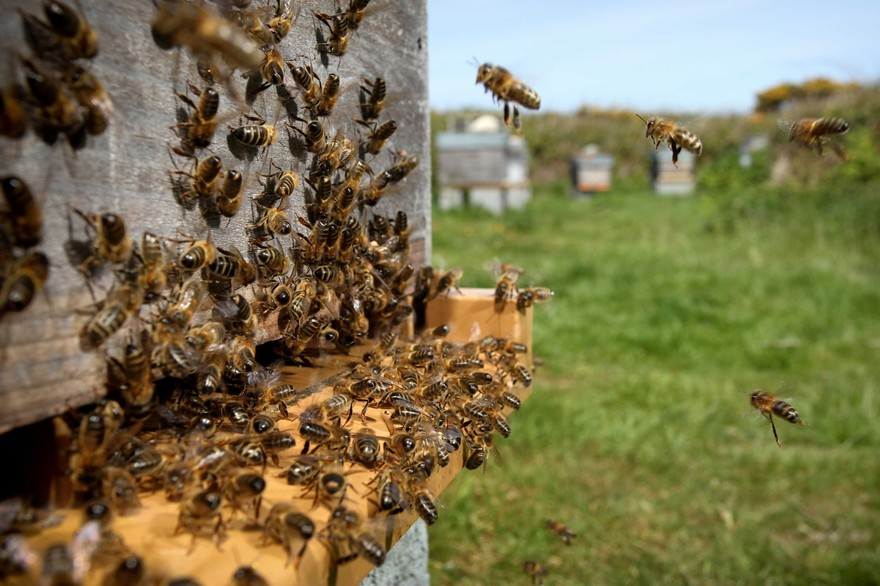

Étape 5
Le nectar qui a été récolté est ramené à la ruche où il est ruminé par d’autres abeilles. Ainsi, il se mélange avec la salive et se transforme en miel. Ce miel est ensuite déposé dans les alvéoles de la ruche. Il servira à nourrir les larves.
